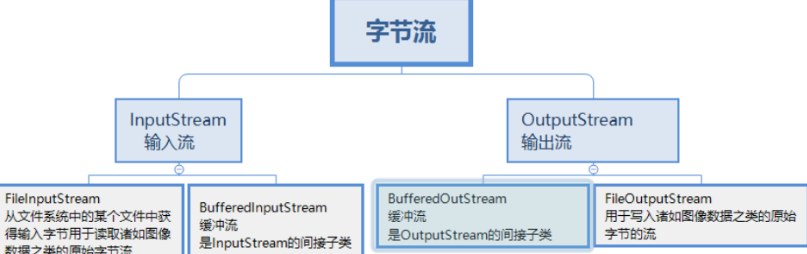

Java基础
基础概念
1. java的特点
主要有三点：1）平台无关性|跨平台性 2）面向对象 3）内存管理（垃圾回收）
2. 优势和劣势
一句非常经典的话能够体现java的优势：一次编译，处处运行，当然除了平台无关性，java的优势还有面向对象、内存管理、juc等等，但目前来看，其他语言也都有像是多线程、面向对象的特性，在我看来，java最大的优势就是其生态强大。
Java 的主要缺点在于其性能通常不如 C++，原因包括：代码需先编译为字节码，再由 JVM 通过解释或 JIT 编译为机器码，引入了额外开销；
其次：Java 程序启动时需要先加载 JVM，然后加载类、初始化类、运行主函数。在微服务或短生命周期任务中，这成为明显劣势。
最后：面向对象过于严格，有时候写简单程序反而麻烦，虽然Java8引入了函数式编程，但不如其他语言自然。
3. 为什么是跨平台的
Java 能支持跨平台，主要依赖于 JVM：也就是只有不同的平台都有jvm，那么java代码就能在不同的平台上运行。
这是因为java使用jvm将平台的差异化给抹除了，也就是不同的平台安装的jvm不同，只是解释出来的机器码不同，但对于字节码文件这样的不同是无感的，在因此，java代码就是跨平台的。
4. JVM、JDK、JRE三者关系
-
JVM是Java虚拟机，是Java程序运行的环境。它负责将Java字节码（由Java编译器生成）解释或编译成机器码，并执行程序。JVM提供了内存管理、垃圾回收、安全性等功能，使得Java程序具备跨平台性。
-
JDK是Java开发工具包，是开发Java程序所需的工具集合。它包含了JVM、编译器（javac）、调试器（jdb）等开发工具，以及一系列的类库（如Java标准库和开发工具库）。JDK提供了开发、编译、调试和运行Java程序所需的全部工具和环境。
-
JRE是Java运行时环境，是Java程序运行所需的最小环境。它包含了JVM和一组Java类库，用于支持Java程序的执行。JRE不包含开发工具，只提供Java程序运行所需的运行环境。

5. JVM 是什么⭐️
JVM是java虚拟机，主要工作是解释自己的指令集（即字节码）并映射到本地的CPU指令集和OS的系统调用。
JVM屏蔽了与操作系统平台相关的信息，使得Java程序只需要生成在Java虚拟机上运行的目标代码（字节码），就可在多种平台上不加修改的运行，这也是Java能够“一次编译，到处运行的”原因。
6.编译型与解释型语言
-
编译型语言：在程序执行之前，整个源代码会被编译成机器码或者字节码，生成可执行文件。执行时直接运行编译后的代码，速度快，但跨平台性较差。
-
解释型语言：在程序执行时，逐行解释执行源代码，不生成独立的可执行文件。通常由解释器动态解释并执行代码，跨平台性好，但执行速度相对较慢。
-
典型的编译型语言如C、C++，典型的解释型语言如Python、JavaScript。
7. 为什么java解释和编译都有⭐️⭐️
 <\p>
- java 源代码被java编译器编译为字节码文件，此外，jit会将热点代码（被频繁使用的方法）动态编译为本地机器码并缓存起来供后续重复使用，这都体现了java的编译性
- jvm 会将字节码文件解释为机器指令并执行，这体现了java的解释性
所以Java既是编译型也是解释性语言，默认采用的是解释器和编译器混合的模式。
1. **字节码（Bytecode）**：是Java源代码编译后生成的中间代码，不是机器码，可以在不同平台上运行。
2. **解释执行**：由JVM中的解释器逐条读取字节码并翻译成本地机器指令执行，速度较慢。
3. JIT（Just-In-Time Compiler）**：即时编译器，在程序运行过程中，对热点代码（频繁执行的方法）进行**动态编译，将字节码直接编译为**本地机器码**，并缓存起来供后续重复使用。
#### 8. 值传递和引用传递⭐️⭐️
在 Java 中，**所有参数传递都是值传递**，不存在真正的“引用传递”。核心区别在于：
| 类型 | 传递内容 | 是否影响原值 |
| -------- | ---------- | -------------------------------------- |
| 基本类型 | 值的副本 | ❌ 不影响 |
| 引用类型 | 引用的副本 | ✅ 可修改对象内容，❌ 不可改变原引用指向 |
#### x. JIT
Java 源代码首先被编译成一种中间形式——字节码（bytecode），而不是直接变成机器码。字节码不能被 CPU 直接执行，必须由 JVM 来处理。
最初，JVM 是通过 解释器（interpreter） 逐行解释字节码来运行程序的，这种方式简单但很慢。
为了解决这个问题，JIT 编译器被引入：它会在程序运行时，把频繁执行的字节码（热点代码）动态编译成高效的本地机器码，并缓存起来供后续直接使用。
### 数据类型
Java 支持的数据类型分为两类，分别为基本数据类型和引用数据类型，基本数据类型也就是变量本身就存储变量值，而引用数据类型存的是变量所在内存地址
#### 1. java 的八种基本数据类型
基本数据类型分为：
- 数值型：byte, short, int, long, float, double
- 字符型：char （2个字节）
- 布尔型：boolean
注意点：
- Java中基本数据类型的字节数：1字节(byte、boolean)、2字节(short、char)、4字节(int、float)、8字节(long、double)。
- 浮点数的默认类型为double（声明一个常量为float，则必须在末尾加上f或F）。
- 整数的默认类型是int（声明long类型要在末尾加上l或L）。
- 八种基本数据类型的包装类：除了char的是Character、int类型的是Integer，其他都是首字母大写。
- char类型是无符号的，不能为负，所以是0开始的。
#### 2. int 和 long 占多少位，多少个字节
**int** 类型是 32 位（bit），占 4 个字节（byte），是有符号整数类型，其取值范围是从 -2^31 到 2^31-1。例如，在一个简单的计算器程序中，如果使用 int 类型来存储计数值，它可以表示的最大正数是 2,147,483,647。如果计数值超过这个范围，就会发生溢出，导致结果不符合预期。
**long** 类型是 64 位，占 8 个字节，long 类型也是有符号整数类型，它的取值范围是从 -2^63 到 2^63-1，在处理较大的整数值时，当 int 类型的取值范围不够，就需要使用 long 类型。例如，在一个文件传输程序中，文件的大小可能会很大，使用 int 类型可能无法准确表示，而 long 类型就可以很好地处理这种情况。
#### 3. long 和 int 可以互转吗
可以的，Java中的 long 和 int 可以相互转换。由于 long 类型的范围比 int 类型大，因此将 int 转换为 long 是安全的，而将 long 转换为 int 可能会导致数据丢失或溢出。
<\p>
- java 源代码被java编译器编译为字节码文件，此外，jit会将热点代码（被频繁使用的方法）动态编译为本地机器码并缓存起来供后续重复使用，这都体现了java的编译性
- jvm 会将字节码文件解释为机器指令并执行，这体现了java的解释性
所以Java既是编译型也是解释性语言，默认采用的是解释器和编译器混合的模式。
1. **字节码（Bytecode）**：是Java源代码编译后生成的中间代码，不是机器码，可以在不同平台上运行。
2. **解释执行**：由JVM中的解释器逐条读取字节码并翻译成本地机器指令执行，速度较慢。
3. JIT（Just-In-Time Compiler）**：即时编译器，在程序运行过程中，对热点代码（频繁执行的方法）进行**动态编译，将字节码直接编译为**本地机器码**，并缓存起来供后续重复使用。
#### 8. 值传递和引用传递⭐️⭐️
在 Java 中，**所有参数传递都是值传递**，不存在真正的“引用传递”。核心区别在于：
| 类型 | 传递内容 | 是否影响原值 |
| -------- | ---------- | -------------------------------------- |
| 基本类型 | 值的副本 | ❌ 不影响 |
| 引用类型 | 引用的副本 | ✅ 可修改对象内容，❌ 不可改变原引用指向 |
#### x. JIT
Java 源代码首先被编译成一种中间形式——字节码（bytecode），而不是直接变成机器码。字节码不能被 CPU 直接执行，必须由 JVM 来处理。
最初，JVM 是通过 解释器（interpreter） 逐行解释字节码来运行程序的，这种方式简单但很慢。
为了解决这个问题，JIT 编译器被引入：它会在程序运行时，把频繁执行的字节码（热点代码）动态编译成高效的本地机器码，并缓存起来供后续直接使用。
### 数据类型
Java 支持的数据类型分为两类，分别为基本数据类型和引用数据类型，基本数据类型也就是变量本身就存储变量值，而引用数据类型存的是变量所在内存地址
#### 1. java 的八种基本数据类型
基本数据类型分为：
- 数值型：byte, short, int, long, float, double
- 字符型：char （2个字节）
- 布尔型：boolean
注意点：
- Java中基本数据类型的字节数：1字节(byte、boolean)、2字节(short、char)、4字节(int、float)、8字节(long、double)。
- 浮点数的默认类型为double（声明一个常量为float，则必须在末尾加上f或F）。
- 整数的默认类型是int（声明long类型要在末尾加上l或L）。
- 八种基本数据类型的包装类：除了char的是Character、int类型的是Integer，其他都是首字母大写。
- char类型是无符号的，不能为负，所以是0开始的。
#### 2. int 和 long 占多少位，多少个字节
**int** 类型是 32 位（bit），占 4 个字节（byte），是有符号整数类型，其取值范围是从 -2^31 到 2^31-1。例如，在一个简单的计算器程序中，如果使用 int 类型来存储计数值，它可以表示的最大正数是 2,147,483,647。如果计数值超过这个范围，就会发生溢出，导致结果不符合预期。
**long** 类型是 64 位，占 8 个字节，long 类型也是有符号整数类型，它的取值范围是从 -2^63 到 2^63-1，在处理较大的整数值时，当 int 类型的取值范围不够，就需要使用 long 类型。例如，在一个文件传输程序中，文件的大小可能会很大，使用 int 类型可能无法准确表示，而 long 类型就可以很好地处理这种情况。
#### 3. long 和 int 可以互转吗
可以的，Java中的 long 和 int 可以相互转换。由于 long 类型的范围比 int 类型大，因此将 int 转换为 long 是安全的，而将 long 转换为 int 可能会导致数据丢失或溢出。
int num = 100;
long bigNum = num; // int -> long 小转大，安全，自动转化
int samllNum = (int)bigNum // long -> int 大转小，不安全，需要强制转换
Integer num = Integer.valueOf(10)
int i = num;
public Integer add(Integer a, Integer b){
return a + b;
}
add(10, 20);
Integer sum = 0;
for(int i = 0; i < 1000; i ++){
sum += i;
}
在该场景下，回拆箱1000次，装箱1000次。
- 引用类型：引用地址不可变（但对象内部状态可变） |
#### 10. 抽象类能加 final 修饰吗
当然不能，抽象类本身的作用就是被其他类继承，而final修饰的类是不能被任何类继承的。
#### 补充 String 为什么要被 final 修饰？
（1）为了线程安全：因为 `String` 是不可变的，所以它是**天然线程安全**的。
（2）支持字符串常量池（String Pool）：Java 为了节省内存，会将字符串字面量存放在“字符串常量池”中。如果两个 `String` 变量的值相同，它们会指向内存中的同一个地址。假设 `String` 是可变的，如果线程 A 修改了字符串的值，那么所有指向该地址的变量（比如线程 B 里的变量）都会跟着被改变。这会直接导致数据错乱，常量池也就失去了意义。
（3）`String` 被广泛用于 Java 的各种核心底层参数。不可变性能防止这些关键参数在运行时被恶意篡改。
#### 11. 接口中可以定义那些方法⭐️
抽象方法是接口的核心，所有实现接口的类都必须重写这些方法，抽象方法默认是 public 和 abstract， 在接口中可以省略。
public interface Animal(){
void makesound();
}
public interface Animal(){
void makesound();
default void sleep(){
sout.xxx
}
}
public interface Animal(){
void makesound();
static void staticMethod(){
pass
}
}
public interface Animal(){
void makesound();
static void staticMethod(){
privateMethod();
}
private void privateMethod(){
pass;
}
}
public class Outer {
private String msg = "这是外部类的成员属性";
// 非静态内部类
public class Inner{
public void show(){
System.out.println(msg);
}
}
// 静态内部类
public static class StaticInner{
public void show(){
System.out.println("这是静态内部类");
}
}
}
// 非静态内部类的实例化
@Test
public void test01(){
Outer.Inner inner = new Outer().new Inner();
inner.show();
}
// 静态内部类的实例化
@Test
public void Test02(){
Outer.StaticInner staticInner = new Outer.StaticInner();
}
- 引用类型：引用地址不可变（但对象内部状态可变） |
#### 2. static 关键字的作用⭐️
`static` 是 Java 中一个非常重要的关键字，用于将成员（变量、方法、代码块、内部类）与**类本身关联**，而不是与类的实例（对象）绑定。
静态变量：被static修饰的变量属于类本身，而非类的某个实例。所有实例都共享同一份静态变量，内存中只存在一份副本。
静态方法：静态方法也属于类，不属于任何实例，因此在静态方法中不能访问非静态成员，因为没有 this 上下文。
修饰代码块：静态代码块在类加载时执行，且只执行一次（优先于对象的构造方法），它主要用来初始化静态变量或者执行类级别的预处理操作。
修饰内部类：静态内部类也是属于类本身的，而非任何一个实例，静态内部类的创建不依赖于外部类的实例，可以直接创建，但它只能访问外部类的静态成员。
### 深拷贝和浅拷贝
注意点：对象的所有值都存在堆内存，而该对象的引用可以在栈区（局部变量表），也可以在堆区（静态变量）
#### 1. 什么是深拷贝⭐️
深拷贝：不仅复制对象本身，还会递归地复制所有引用类型的字段所指向的对象，直到所有层级都是新对象。
#### 2. 什么是浅拷贝⭐️
**浅拷贝**：只复制对象本身的字段值，对于引用类型的字段，仅复制其引用（地址），不复制所指向的对象。
浅拷贝会为新对象分配新的内存，并把原对象的所有字段值（包括基本类型的值和引用类型的地址）原样复制过去。因此基本类型天然隔离，引用类型可能共享 —— 这就是“浅”的含义。
#### 3. 它们的区别是什么
| 对比项 | 浅拷贝 | 深拷贝 |
| ---------------- | ---------------------- | -------------------- |
| **基本类型字段** | 复制值（独立） | 复制值（独立） |
| **引用类型字段** | 复制引用（共享对象） | 复制对象（全新实例） |
| **内存关系** | 新旧对象共享部分子对象 | 完全独立的对象树 |
| **修改影响** | 可能互相影响 | 互不影响 |
| **性能开销** | 小 | 大（需递归复制） |
#### 4. 实现深拷贝的3种方式⭐️
**第一种：**当前类以及当前类中的所有引用类型成员全部实现 `cloneable` 接口并重写 `clone()` 方法（手动递归克隆），之后再该类下的 `clone` 方法手动调用其他引用类型成员的 `clone` 方法来完成深拷贝。
让所有引用类型成员也实现 `Cloneable` 并重写 `clone()`
在外层对象的 `clone()` 中调用它们的 `clone()`
class Address implements Cloneable {
String city;
public Address(String city) { this.city = city; }
@Override
protected Object clone() throws CloneNotSupportedException {
return super.clone();
}
}
class Person implements Cloneable {
String name;
Address address;
@Override
protected Object clone() throws CloneNotSupportedException {
Person p = (Person) super.clone();
p.address = (Address) this.address.clone(); // 手动深拷贝引用对象
return p;
}
}
public class CloneTest {
@Test
public void test01() throws CloneNotSupportedException {
Person p1 = new Person("ltb", "上海");
Person p2 = (Person) p1.clone();
System.out.println(p1);
System.out.println(p2);
System.out.println(p1 == p2);
System.out.println(p1.getAddress() == p2.getAddress());
}
}
import java.io.*;
public static <T extends Serializable> T deepCopy(T obj) {
try {
ByteArrayOutputStream bos = new ByteArrayOutputStream();
ObjectOutputStream oos = new ObjectOutputStream(bos);
oos.writeObject(obj);
ByteArrayInputStream bis = new ByteArrayInputStream(bos.toByteArray());
ObjectInputStream ois = new ObjectInputStream(bis);
return (T) ois.readObject();
} catch (Exception e) {
throw new RuntimeException(e);
}
}
// 定义泛型类：T 必须是 Number 的子类
public class Box<T extends Number> { ... }
// 定义泛型方法
public <T extends Comparable<T>> void sort(List<T> list) { ... }
// 方法参数：list 可以是 List<Integer>, List<Number>, List<Object>
public void addInt(List<? super Integer> list) {
list.add(100); // 安全：100 是 Integer，肯定能放进这些列表
}
@Test
public void test01() throws IllegalAccessException {
Class<? extends Person> person = p.getClass();
for (Field declaredField : person.getDeclaredFields()) {
declaredField.setAccessible(true);
System.out.println(declaredField.get(p));
}
}
// 获取类信息 .class
xxx.class;
class.forname()
...
Object obj = clazz.getDeclaredConstructor(String.class).newInstance("张三");
Method method = clazz.getMethod("sayHello");
method.invoke(obj); // 动态执行方法
Field field = clazz.getDeclaredField("age");
field.setAccessible(true); // 允许访问私有字段
field.set(obj, 25);

#### 1. 介绍一下 java 异常⭐️
`Java 异常是程序运行过程中发生的非正常事件`，用于中断当前执行流程并传递错误信息。整个异常体系以 `java.lang.Throwable` 为根类，主要分为两个子类：`Error` 和 `Exception`。
Error 表示 **JVM 层面的严重错误**，通常由系统资源耗尽或虚拟机内部故障引起。，java 程序无须处理也无法处理，如系统奔溃、栈溢出等等。Exception 则是程序本身可以处理的非正常事件，也就是异常，异常主要分为两大类：
受检异常：编译器强制要求处理的，比如说 IOEeception，SQLException
非受检异常（运行时异常）：继承自 RuntimeException 或者 Error，编译器不需要强制处理的。
| 类型 | 说明 | 是否需要处理 | 示例 |
| ----------- | ---------------------------- | -------------------- | ---------------------------------------- |
| **`Error`** | JVM 系统级错误，程序无法恢复 | ❌ 不需（也无法）处理 | `OutOfMemoryError`, `StackOverflowError` |
| `Exception` | 程序逻辑或外部环境导致的异常 | ✅ 需要处理 | `IOException`, `NullPointerException` |
#### 2. java 异常处理有哪些方式⭐️
异常处理主要是通过 try-catch 语句块来捕获和处理异常的，java 中常用的异常处理方式主要有：
try catch 语句块
try{
// 可能抛出异常的代码
} catch(Exception e1){
// 处理e1类型的逻辑
} finally{
// 可选的 finally 块，无论是否发现异常都会执行的代码
}
public void readFile() throws IOException {
// 不处理异常，交给调用者处理
}
try {
return "a";
} finally {
return "b"; // ← 会覆盖上面的返回值！
}
// 最终返回 "b"
String s1 = new String("hello");
String s2 = new String("hello");
System.out.println(s1 == s2); // false（不同对象）
System.out.println(s1.equals(s2)); // true（内容相同）
class User {
private int id;
private String name;
@Override
public boolean equals(Object obj) {
if (this == obj) return true;
if (obj == null || getClass() != obj.getClass()) return false;
User user = (User) obj;
return id == user.id;
}
}
public int hashCode(){
return Integer.hashCode(id);
}
(parameters) -> expression // 当lambda方法体只有一个表达式时使用，默认会返回表达式的结果
() -> {statements;} // 如果方法体有多条语句，需要用{}包裹，如果有返回值需要return
boolean hasEmpty = strings.stream().anyMatch(String::isEmpty);
boolean allPositive = nums.stream().allMatch(n -> n > 0);
`IntStream.rangeClosed().boxed() |
为什么原始流需要转为对象流：因为 collect这样的终结流只能操作对象流。
如果将原始流转为对象流：xx.boxed()
##### 5. Stream 流的并行api
并行流就是将数据源通过多个子流来进行多线程操作，然后将处理的结果再汇总为一个流对象，底层是使用通用的 fork/join 池来实现的。
通俗来讲，就是把一个大任务拆分为了多个小任务同时进行，然后再去把这些小任务的结果汇总。
获取并行流的 api 主要有以下
1. 直接通过集合对象获取
2. 将已有串行流转换为并行流
list.stream().parallel();
// 使用 Guava ListenableFuture（伪代码）
listenables.addFuture(step1, new FutureCallback<String>() {
@Override
public void onSuccess(String result) {
listenables.addFuture(step2, new FutureCallback<String>() {
@Override
public void onSuccess(String result) {
listenables.addFuture(step3, new FutureCallback<String>() {
@Override
public void onSuccess(String result) {
System.out.println(result);
}
});
}
});
}
});
CompletableFuture<String> result = CompletableFuture.supplyAsync(() -> "Step1")
.thenApply(s -> s + "Step2")
.thenApply(s -> s + "Step3");
result.thenAccept(System.out::println);
// 无返回值
CompletableFuture<Void> future1 = CompletableFuture.runAsync(() -> {
System.out.println("异步执行");
});
// 有返回值
CompletableFuture<String> future2 = CompletableFuture.supplyAsync(() -> {
return "Hello World";
});
future2.thenApply(result -> result.toUpperCase()) // 转大写
.thenAccept(System.out::println) // 打印
.exceptionally(throwable -> {
throwable.printStackTrace();
return "默认值";
}); // 异常处
case SavingsAccount sa -> result = sa.getSavings();
if (arr instanceof int[] {1, 2, 3})
hello {name}, welcome to the geeksforgeeks!


#### IO 设计模式
### 其他
#### 1. http 常见状态码
1. 200 OK //客户端请求成功
2. 301 Permanently Moved （永久移除)，请求的 URL 已移走。Response 中应该包含一个 Location URL, 说明资源现在所处的位置
3. 302 Temporarily Moved 临时重定向
4. 400 Bad Request //客户端请求有语法错误，不能被服务器所理解
5. 401 Unauthorized //请求未经授权，这个状态代码必须和 WWW-Authenticate 报头域一起使用
6. 403 Forbidden //服务器收到请求，但是拒绝提供服务
7. 404 Not Found //请求资源不存在，eg：输入了错误的 URL
8. 500 Internal Server Error //服务器发生不可预期的错误
9. 503 Server Unavailable //服务器当前不能处理客户端的请求，一段时间后可能恢复正常
#### 2. get 和 post 的区别
| **维度** | **GET** | **POST** |
| ------------ | ------------------------------------------ | ------------------------------------ |
| **参数位置** | 拼接在 **URL** 后面（Query String） | 放在 **Request Body**（请求体）中 |
| **安全性** | **较低**（参数暴露在地址栏，会被日志记录） | **较高**（适合传输敏感信息） |
| **数据长度** | 受 URL 长度限制（通常 2KB 左右） | 原则上**无限制** |
| **幂等性** | **幂等**（多次执行结果相同，不修改数据） | **非幂等**（多次执行会创建多个资源） |
| **缓存** | 浏览器会主动缓存 | 默认不会缓存 |
而最核心的区别实际是它们的含义不同，GET 是从服务端**索取**数据，而 POST 是向服务端提交数据的。
#### 3. Cookie 和 Session 的区别
**一句话核心：** Cookie 存**客户端**（浏览器），Session 存**服务端**。